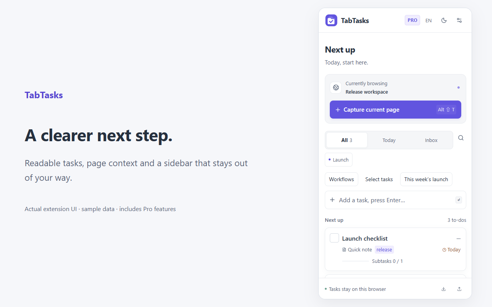
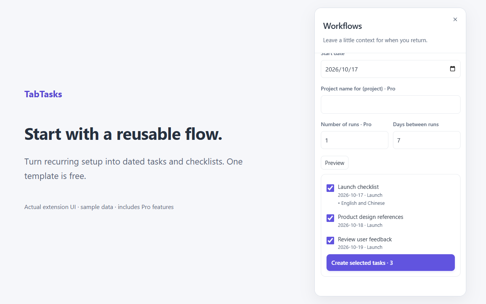
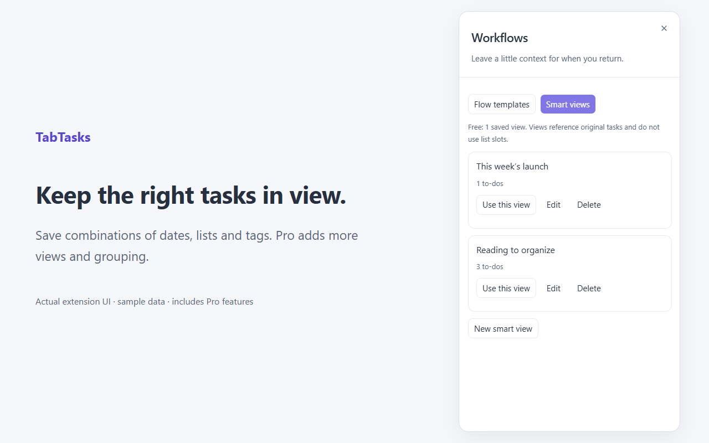
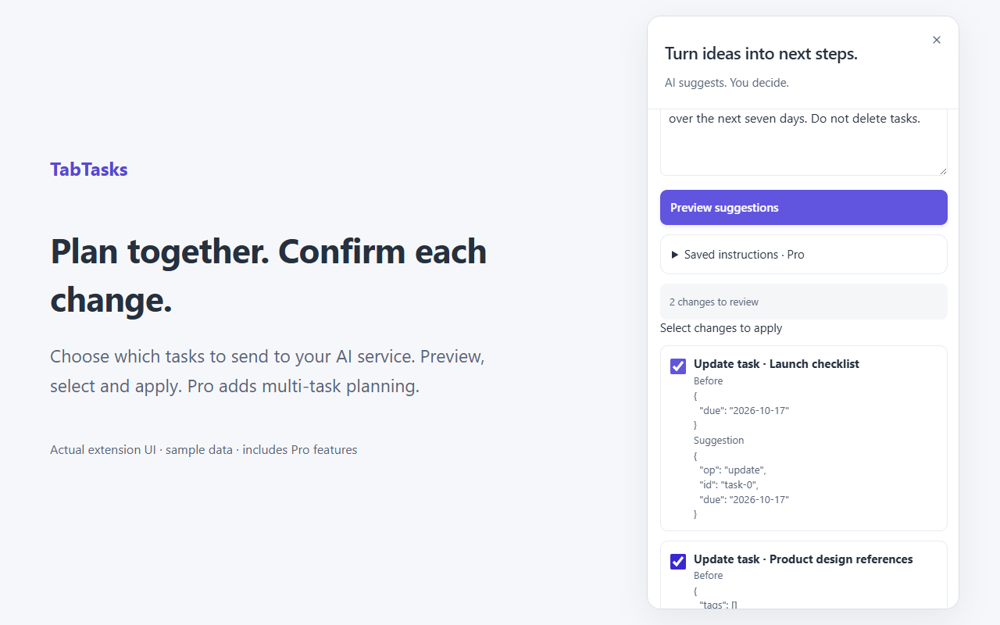
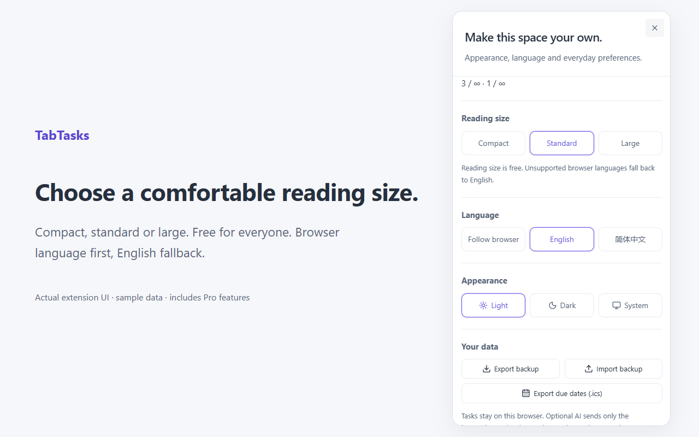

Capture the moment
Save a webpage or selected text with notes, tags, subtasks, due dates and supported page excerpts. All of these basics are free.
This page presents TabTasks 0.6.0. Store review and update distribution may take longer; check your installed version.
Capture a page, reuse a checklist, and keep the right tasks in view. Readable by default, with your next step close at hand.
Chrome 116+ · Local storage · No account required

Save a webpage or selected text with notes, tags, subtasks, due dates and supported page excerpts. All of these basics are free.
Reuse one dated flow template and save one smart view for free. Pro adds multiple templates, project-name variables, cross-list batches, grouping and pins.
Bring an OpenAI Chat Completions or Anthropic Messages compatible API key. Single-task AI is free; Pro adds multi-task plans and reusable instructions. Preview and confirm changes.
Compact, standard or large text is free. Follow your browser language with English fallback, or switch between English and Simplified Chinese.
Follows your browser. English fallback, with a manual language choice.
Light, dark, or follow your system.




$6 · one-time purchase
Completed tasks and built-in lists do not use the 30 / 3 allowance. Pro removes these product count limits; local storage and browser resources still apply.
Applicable tax is shown at checkout. Each product is purchased separately. Existing Pro licenses include this update.
Start in the extension for automatic activation after payment verification. Email recovery and existing license codes remain available.
No. Content and reusable workflows stay in this browser. JSON backups are available on Free; export before changing devices or uninstalling. Credentials and Pro licenses are excluded. The extension has no usage analytics; website traffic analytics is separate.
Choose an OpenAI Chat Completions or Anthropic Messages compatible service, API address and model. Compatibility depends on the provider implementation. Use your own API key; API usage is billed by that provider and is not included in Pro. A consumer chat subscription does not necessarily include API access.
Each product has an optional $6 one-time Pro purchase, with applicable tax shown at checkout. Purchases started in the extension support verified automatic activation. For another device, use purchase-email recovery or an existing license code.
Tasks, templates and views stay local. AI sends only your instruction and selected task IDs, titles, dates, completion states and tags to your chosen service; URLs, notes and page excerpts are excluded. No extension usage analytics.
Privacy policy